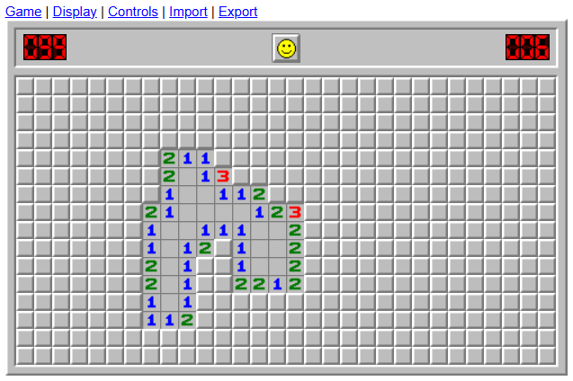
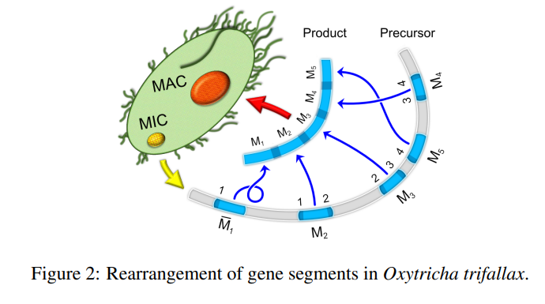

Competitive Programming
Compete for Rose-Hulman on the competitive programming team. Placed 18th in the mid west ICPC regionals 2024. Shoutout Kaelin, Emmet, and Harrison.
Competitions take place on Kattis
Game Optimizations
Created codes to model and solves popular games such as Sudoku, Connect Four, and Minesweeper. The Minesweeper interects direcetly with minesweeper.com.
For interactive games like Minesweeper and Connect Four I utilized python and librarys such as pyguiauto. For stand alone games like sudoku C++ was used to fit time constraints.
Biomath Combinatorial Research on Oxytricha Trifallax
Worked with a Rose Prof, Dr. Manda Riehl, to look at a language model of the DNA rearangemnt and deletment proccess of Oxytricha Trifallax. Refined previously found boundes and complexity analysis on the distance between words in languages.
